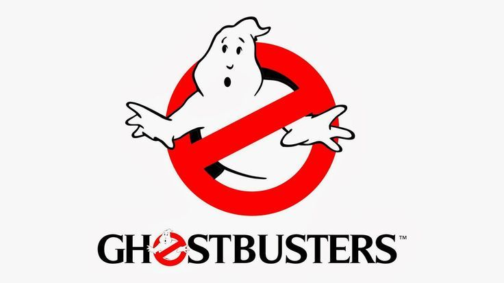

{\rtf1\ansi\ansicpg1252\cocoartf2580
\cocoatextscaling0\cocoaplatform0{\fonttbl\f0\fswiss\fcharset0 ArialMT;}
{\colortbl;\red255\green255\blue255;}
{\*\expandedcolortbl;;}
\paperw11900\paperh16840\margl1440\margr1440\vieww11520\viewh8400\viewkind0
\pard\tx566\tx1133\tx1700\tx2267\tx2834\tx3401\tx3968\tx4535\tx5102\tx5669\tx6236\tx6803\pardirnatural\qj\partightenfactor0

\f0\fs20 \cf0 <!DOCTYPE html>\
<html lang="en">\
  <head>\
    <title>Favourite Films</title> <!-- Title of Page 3 -->\
  </head>\
  <body>\
    <h1>My Favourite Films</h1> <!-- Main heading -->\
    <p>Here are some of my favourite films:</p> <!-- Description -->\
     <!-- Local image for pizza -->\
    <ul>\
      <li>Shrek</li>\
       <!-- Local image for Shrek -->\
      <li>Ghostbusters</li>\
       <!-- Local image for Ghostbusters -->\
      <li>The Matrix</li>\
       <!-- Local image for The Matrix -->\
    </ul>\
    <h2><a href="index.html">Go back to My Favourite Things</a></h2> <!-- Link to Page 1 -->\
    <h2><a href="page2.html">Go to Favourite Foods</a></h2> <!-- Link to Page 2 -->\
  </body>\
</html>\
}